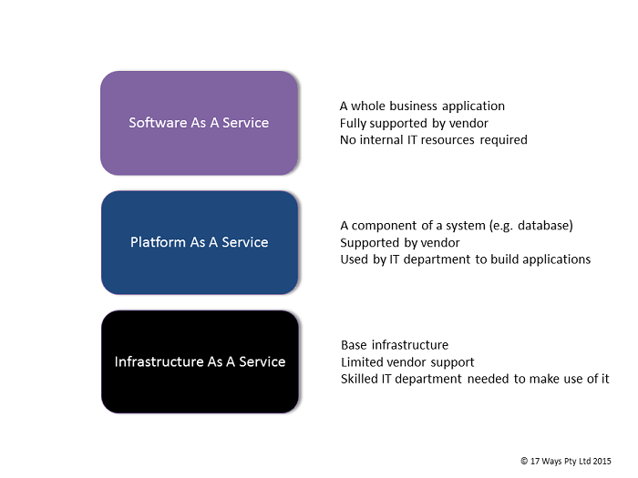
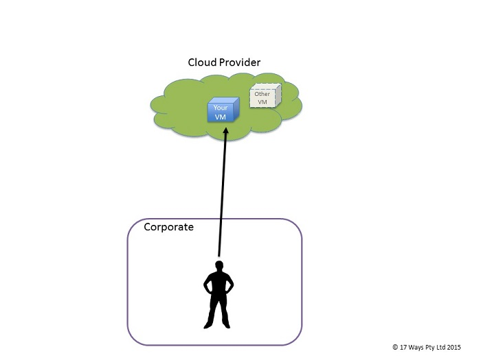
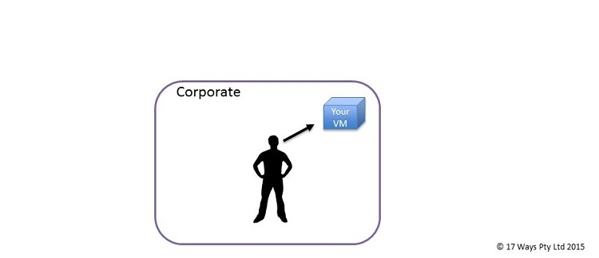
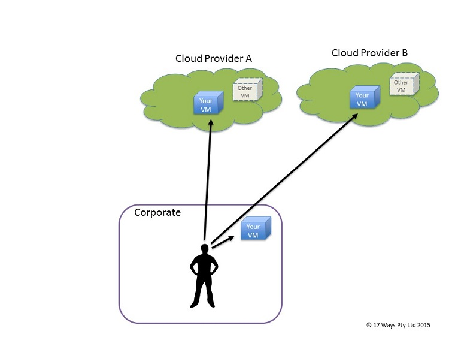
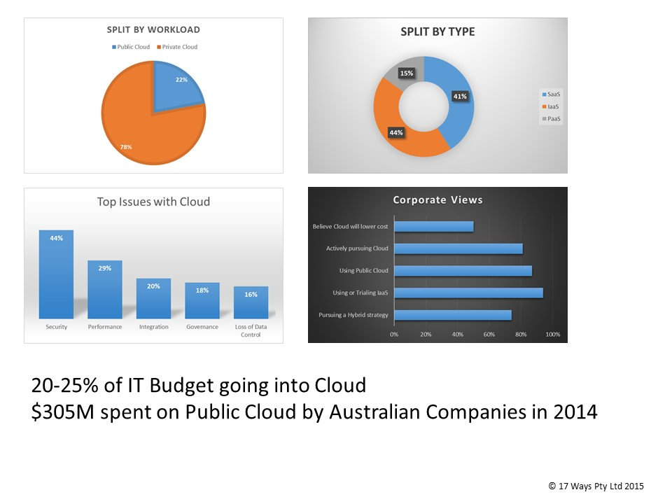
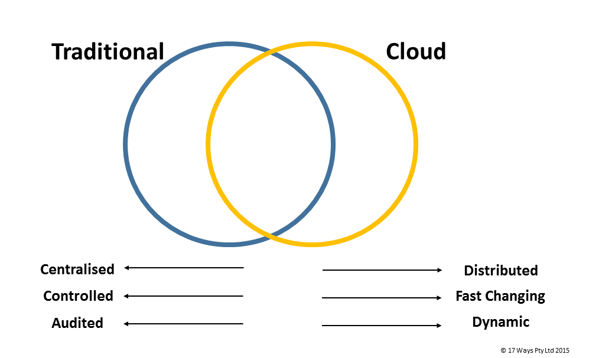

It is hard to read anything related to technology without coming across the term Cloud Computing. In this article we try to explain what Cloud Computing is all about and to highlight the benefits and challenges of adopting Cloud for your business.
In Cloud vs Converged we compare Cloud Computing to the latest incarnation of traditional Data Centre technology - Converged Infrastructure.
Cloud Computing is the term for any technology solution where the infrastructure is provided for you by a third party. More specifically Cloud usually means one of three things:
Software-As-A-Service has been around for a long time. Originally just called Hosting, in this model you subscribe to a service that provides a full application. Salesforce, Microsoft 365 and Google Docs are examples of SaaS. SaaS came out originally because many companies lacked the resources and technical expertise to run large software platforms themselves. To address this vendors offered a service whereby they would run the software for you on their infrastructure for a fee.
Platform-As-A-Service is the step below SaaS. In this model rather than providing a whole working application for you, the vendor provides a component that you can use in your application. Typically this is something like a database or a web server that you then build on top of with your own application.
Dropping another level down is Infrastructure-As-A-Service. IaaS providers give you access to raw infrastructure on which you can run your applications and databases. IaaS comes from Internet companies such as Google, Microsoft and Amazon and is the area of most current focus.
Watch out for vendors who talk about IaaS but quote adoption rates and levels of success that include the much more mature SaaS.
Infrastructure-As-A-Service is the most interesting aspect of the Cloud and the area that will have the largest impact on corporate IT. While traditional corporate IT departments were focussed on building applications with large backend databases running on expensive servers with fault tolerant hardware that could withstand failures, the newer Internet companies like Amazon and Google were approaching things in a very different way. Instead of centralised, carefully managed databases and controlled releases of new code, they took almost the opposite approach. Distributed databases and an expectation that hardware would fail became the norm and a whole new approach to building applications was used. The key factor for companies like Facebook or Twitter is the ability to get things out quickly and to keep evolving their platforms. The infrastructure that supports this needs to be highly scalable. They based their infrastructure on large farms of cheap PCs, rather than the small number of reliable, but expensive servers that are typical in the corporate IT world.
They had so much success with this that some companies realised they could sell (or rent) their infrastructure to other companies as IaaS. Amazon are the current leader in this space with Microsoft, IBM, Google and others still a little behind.
SaaS is a very different beast to PaaS and IaaS. Because a whole application is delivered with SaaS there is no need for anything to integrate with it to make it work. It can be delivered using any technology that you like under the covers and all you ever deal with are the user interfaces that it provides, typically but not always, web pages. In the case of PaaS and IaaS you need technology to interact with it for it to be useful. This means you need agreed ways of communicating and all of the standard difficulties of IT are exposed to you such as security, performance and resilience to outages. If you are using PaaS or IaaS then there are different kinds of Cloud that you can deal with.
This is the plain vanilla version. You arrange with a vendor such as Amazon, Google or Microsoft to provide you with some services, typically a virtual machine running Linux or Windows. You connect to this either over the Internet or through a more secure private network and you install and run your applications on this virtual machine. The users of the application connect to it in much the same way. The virtual machines that you use run on very scalable hardware managed by the Cloud provider who also runs virtual machines for other customers on the same equipment. The biggest advantage, apart from not having to run your own Data Centre, is that you can scale up and down as you need to. If you normally need 10 virtual machines to run your application but at month end you need 100 then no problem. You only pay for what you use at the time.
Alternatively known as "Not the Cloud". In this model companies run their own Cloud within their Data Centre. Rather than using Amazon or Microsoft as their provider they provision this internally. There are a few reasons for doing this. The main one is to be "Cloud Ready" as companies look to redevelop their applications for the Cloud but are not yet fully comfortable with moving there or are awaiting regulatory approval to do so. Another reason for running a Private Cloud is as part of a Hybrid Cloud solution which is covered next.
One of the issues with Private Cloud is that the definitions are very loose. Some organisations have re-defined their existing infrastructure to be Private Cloud without actually changing anything. This is one of the things that makes understanding true Cloud adoption rates very difficult.
This quote from Larry Ellison, Chairman of Oracle1 sums up some of the difficulties with understanding Cloud:
“The interesting thing about cloud computing is that we’ve redefined cloud computing to include everything that we already do. I can’t think of anything that isn’t cloud computing with all of these announcements...Maybe I’m an idiot, but I have no idea what anyone is talking about. What is it? It’s complete gibberish. It’s insane. When is this idiocy going to stop?”
Welcome to the IT industry Larry!
Hybrid Cloud is a mixture of Private Cloud and one or more Public Clouds. With Hybrid Cloud you can choose dynamically what runs on your own, private infrastructure and what runs on the Public Cloud. You can use Public Cloud for your burst capacity or as a disaster recovery option for your Private Cloud. Hybrid Cloud is a very sensible option for companies looking to hedge some of the risks with Public Cloud while still getting the benefit of the burst capacity and lower overheads.
The Cloud isn't magic. Your applications don't really run in a Cloud, they run in a Data Centre, just one that someone else looks after instead of you.
It is hard to get a proper picture of Cloud adoption rates by corporates for a number of reasons. Most figures come from surveys which are usually directed at CIOs. Due to its nature, a lot of SaaS usage is initiated and managed directly by business units often without the knowledge of the IT department. It is probably safe to say that most figures on the adoption of SaaS are understated. There is a large level of hype around Cloud and CIOs are under pressure from CEOs to ensure that the company has a strategy around moving to the Cloud and adopting IaaS. We will address some of the challenges with this below but it is rare to find an organisation that is not doing something with the Cloud (Only 8% of organisations don't have a plan to use Cloud2).
While the numbers can be hard to understand and often conflicting, it is clear that corporates are putting a lot of effort into the Cloud. Australia leads the way with 86% of companies running at least one production application in the Cloud3 compared to only 50% in the USA and 60% in Europe. A large amount of this is SaaS which is different to IaaS and a lot more mature. 4 out of 5 corporates around the world are intending to use the Cloud for mission critical applications in the next 2 years3.
We have collated some general statistics to show the overall picture4-6:
The Cloud offers major benefits due to its flexibility. Because you don't need physical servers to be built you can deploy an application extremely quickly. If you can overcome the other challenges associated with the Cloud then you have a great platform to work on. The ability to deploy environments dynamically and without the risk of impacting other systems is probably the main driver for moving to the Cloud. The area that benefits most from this is IT Development and Testing. IT staff constantly need to run up new copies of the system to test out and often only need them for a short amount of time. With proper automation tools this flexibility can have a massive impact on productivity.
The ability to scale up and down as you need to is another key benefit of the Public Cloud. Be cautious of the variable nature of your costs (See below) and ensure that you properly monitor your usage. You will only get a real benefit here if you develop your applications to scale across the Cloud. Don't expect that you can pick up existing applications and they will just work in the Cloud as this is unlikely to be true. As new applications are developed specifically to take advantage of Cloud technologies, this will become a major differentiator for adoptors of Cloud.
Flexibility and Burst Capacity are the real benefits of Public Cloud. Focus on applications that will benefit from this.
A lot of organisations are drawn to Cloud because it removes the need to purchase large expensive Data Centre equipment. The ability to pay a monthly fee for infrastructure on a pay-per-use basis is appealing.
At 17 Ways we believe this argument is overstated and often not true.
While having large, lumpy IT infrastructure costs on the books is unappealing, there are other ways to address this problem. IT leasing is readily available and achieves the same thing. We recommend that you look at this before committing to a Cloud strategy that is based upon moving from Capex to Opex. If you run a Private Cloud, which we recommend, then you will need to address this problem anyway. One of the major issues with Public Cloud is the uncertainty of your costs. The models are usually based upon usage with different rates for fixed baseline, variable use and one-off workloads. We recommend that you look very closely at the cost of running your Public Cloud and negotiate hard with the providers before committing to anything. Getting rid of major capital expenditure may be appealing to begin with but replacing it with far higher monthly charges will not be well received.
50% of corporate decision makers believe that moving to the Cloud will be cheaper. We expect that many of them will be disappointed. New technologies are rarely cheaper, at least to begin with. A significant part of the cost of running infrastructure is people - Gartner estimate it is 41% of the total cost7. It is a harsh reality that this cost is likely to go up before it comes down. Managing Cloud environments is still an immature area and people with these skills command a higher salary. You need to properly understand your people costs and not just focus on the infrastructure costs.
We know of an organisation with an infrastructure department of around 50 people that is looking to move to the Cloud. The high level cost estimates include redeploying these 50 staff to other activities. However on closer inspection only 3 of the 50 staff are directly involved in hardware deployment. The other 47 are working on ancilliary activities such as monitoring, patching and security services. While those 3 people won't be needed once the Cloud strategy is fully implemented, the rest of the team will likely have to grow significantly to manage the new Cloud world.
Total Cost of Ownership (TCO) needs to really mean that. Many of the TCO numbers used to support a Cloud migration only address the cost of infrastructure and neglect to include additional costs for people and knock on effects to other departments. Often the extra cost of redeveloping applications to work in the Cloud is left out of the calculation.
We believe the Cloud, and especially IaaS, offer real benefits to organisations, however the area is still very immature and it is important that corporates especially look at the full picture before making decisions on Cloud migration.
There is a tendency to think that the Cloud will replace all traditional approaches to Infrastructure. This is simply not true.The Internet companies that pioneered the use of Cloud adopted a number of different technologies to acheive this. They were also trying to solve a different type of problem from the those faced by traditional IT departments. We cover this in more detail in Cloud vs Converged but in summary the companies who will be successful at implementing Cloud are the ones who can identify the applications the will work best in the new technology and focus their efforts into them. For some organisations Cloud is currently a solution looking for a problem. 
Regulators are a big inhibitor to Cloud activities, particularly for financial companies. It is likely that this will evolve as they become more familiar with the technology and get a better idea of the risks involved and the mitigants.
One thing to be very careful of is overseas regulators. While APRA in Australia may eventually be open to more use of Cloud, if your company operates in other jurisdictions then be mindful that overseas regulators may take a firmer view. Countries such as Singapore and South Korea are especially strict on out of country data storage and have no qualms about cancelling trading licences.
In the traditional Data Centre model the data is viewed as the most important corporate asset. It is kept securely looked in the Data Centre, regularly backed up and tested during Disaster Recovery tests. The data is viewed as a core business as well as a technology asset and usually consists of information based around customers and their activities.
In the Cloud the data tends to be more social rather than transactional data. It is usually distributed (different database technologies have developed to support this) and may not even be backed up at all due to the distributed model keeping it in multiple places.
Neither approach is right or wrong but for traditional corporate IT departments there is a high level of comfort in the first model. By leaving the master copy of the data inside the corporate Data Centre you are likely to have performance problems with the Cloud. However by putting the data fully on the Cloud you have ownership issues. The data now belongs to your Cloud provider and you have access to it. This is something that all corporates need to come to terms with before Cloud adoption can become prevalent.
For SaaS models this is just as much of an issue but is often ignored because the relationships are directly with the business users and don't go through the IT department. We recommend that if you use any kind of SaaS solution that you look at how you can extract your data and consider what you will do when there is a major outage or data loss at your provider.
You may be able to get contractually guaranteed service levels from your Saas providers and in some circumstances from your PaaS and IaaS suppliers but even if you do they are likely to be of little use. Amazon for example will waive the charges for an hour if your system is unavailable. Little consolation if a major customer of yours was directly impacted. The lack of service levels are probably not the main issue, few organisations have service levels with their internal Data Centre teams, the real issue is lack of leverage. However large you may be you are unlikely to ever be more than a small customer to the big Cloud providers. With an internal infrastructure solution there is always leverage over the team that support it for you.
As with all vendor relationship, expect to put a lot of effort into managing the relationship and getting the best return.